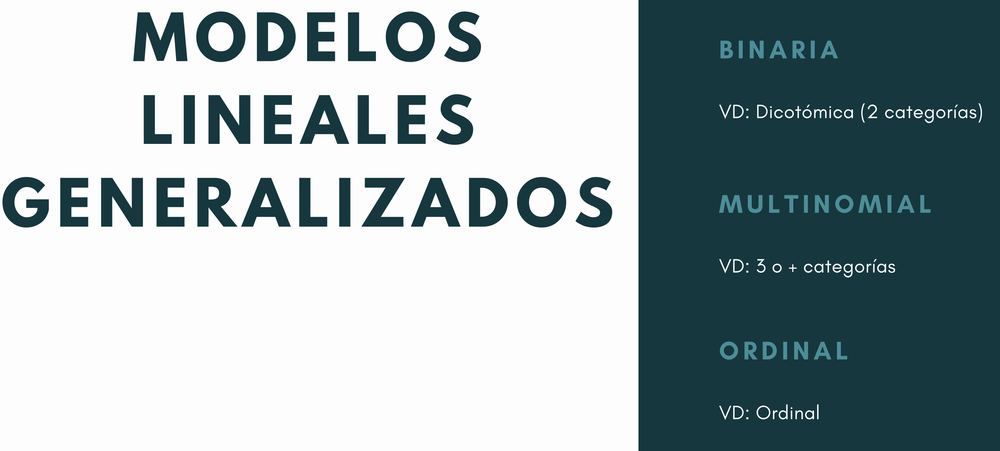

Sesión Multinomial

FACULTAD DE CIENCIAS SOCIALES - PUCP
Curso: POL 304 - Estadística para el análisis político 2 | Semestre 2024 - 1
Jefas de Práctica: Karina Alcántara üë©‚Äçüè´ y Lizette Crisp√≠n üë©‚Äçüè´



Pregunta de investigación:
¿Una econom√≠a liberal influye en el nivel de democracia? ü§î
Base de Datos
La base de datos a trabajar combina los datos obtenidos en el Democracy Index1 y el Index of Economic Freedom2 . Lo que veremos en esta clase es la relación entre el tipo de régimen político (democracia, democracia fallida y dictadura) con variables económicas.
Llamamos a las librerías
library(rio)
library(car)
library(nnet)
library(DescTools)
library(RVAideMemoire)
library(marginaleffects)
library(tidyverse)Exploremos la data:
Formateo de las variables
1.1 Limpieza de data e identificación de las variables
demofree <- demofree %>%
rename(regimen = `Regime type`,
property = `Property Rights`,
tradefree = `Trade Freedom`,
busfree =`Business Freedom`)Eliminamos casos perdidos
Comencemos con la variable dependiente:
## # A tibble: 4 × 2
## regimen Frecuencia
## <chr> <int>
## 1 Authoritarian 52
## 2 Flawed democracy 51
## 3 Full democracy 22
## 4 Hybrid regime 33Ojo con Hybrid regime y Flawed democracy
demofree$regimen <- recode(demofree$regimen,
'Full democracy' = 3,
'Hybrid regime' = 2,
'Flawed democracy' = 2,
'Authoritarian' = 1)Confirmamos la suma
## # A tibble: 3 × 2
## regimen FrecuenciaRecod
## <dbl> <int>
## 1 1 52
## 2 2 84
## 3 3 22Formateamos la variable regimen:)
1.2. Elegir la línea base
La línea de base o baseline sirve para tener una referencia al interpretar los resultados del modelo. En este caso nuestra dependiente fue recodificada en “Democracia”,“Democracia fallida”,“Dictadura”. Entonces, “Democracia fallida” al estar en el medio es nuestra baseline.
Verificamos qué ha considerado R
## Democracia fallida Democracia
## Dictadura 0 0
## Democracia fallida 1 0
## Democracia 0 1Con el siguiente comando establecemos la categoría de referencia. en ref mencionamos cómo se llama esta categoría, por eso es importante tener bien etiquetadas las variables.
Modelo 1
Variable dependiente= Regimen Político
regimenVariable independiente= Trade Freedom
tradefree(Libertad de comercio) y Property Rightsproperty(Derecho a la propiedad privada)
Paso 1: Preparar la data
confirmamos que nuestras variables estén en el formato adecuado (numérico)
## num [1:158] 66 88.4 66.2 66.2 69.2 80.6 88.2 86.4 74.6 79.4 ...## num [1:158] 48.3 57.1 37.9 36.9 50.5 60.7 82.8 87.3 67.1 70.6 ...Paso 2: Modelo logístico
2.1 Realizar modelo logístico
No olvidemos cual es nuesta línea de base para la interpretación.
## # weights: 12 (6 variable)
## initial value 173.580742
## iter 10 value 106.123891
## iter 20 value 105.309757
## final value 105.300936
## converged## Call:
## multinom(formula = regimen ~ property + tradefree, data = demofree)
##
## Coefficients:
## (Intercept) property tradefree
## Dictadura 6.015109 -0.02654594 -0.07105396
## Democracia -13.772977 0.15297576 0.01435271
##
## Std. Errors:
## (Intercept) property tradefree
## Dictadura 1.403839 0.01604789 0.02271007
## Democracia 5.496404 0.03784344 0.07256821
##
## Residual Deviance: 210.6019
## AIC: 222.60192.2: Relación de las variables
Un primer paso sería ver el signo de los coeficientes para determinar la relación entre la variable independiente y la variable dependiente
Derechos de propiedad
- Coeficiente (dictadura) :-0.02654594
Si un país aumenta en un punto el indicador de derechos a la propiedad, la probabilidad de que sea dictadura a que sea democracia fallidad disminuye
- Coeficiente (democracia): 0.15297576
Si un país aumenta en un punto el indicador de derechos a la propiedad, la probabilidad de que sea democracia a que sea democracia fallida aumenta
Libertad económica
- Coeficiente(dictadura) :-0.07105396
Si un país aumenta en un punto indicador de libre comercio, la probabilidad de que sea dictadura a que sea democracia fallida disminuye.
- Coeficiente(democracia):0.01435271
Si un país aumenta en un punto el indicador de libre comercio, la probabilidad de que sea democracia a que sea democracia fallida aumenta
2.3: Aplicando la ecuación
Recordamos la ecuación y realizamos un ejemplo

Usamos los valores de 50 (property) y 60 (tradefree)
prob dictadura
numeDct<-exp(6.015109-0.02654594*50-0.07105396*60)
denomDct<-1+numeDct
ProbDct<-numeDct/denomDct
ProbDct## [1] 0.6045773prob democracia
numDemo= exp(-13.772977)*(exp(0.15297576*50)*exp(0.01435271*60))
denomDemo=1+numDemo
ProbDemo=numDemo/denomDemo
ProbDemo## [1] 0.005152915¿Probabilidad de la democracia fallida?

2.3: Significancia de las variables
Se debe realizar variable por variable
#install.packages("RVAideMemoire")
test.multinom(mod1,property) # Se coloca test.multinom(nombredelmodelo,variableindependiente1)## Coeff SE Odds.ratio z Pr(>|z|)
## Dictadura|Democracia fallida -0.026546 0.016048 0.9738 -1.6542 0.09809
## Democracia|Democracia fallida 0.152976 0.037843 1.1653 4.0423 5.292e-05
## Democracia|Dictadura 0.179520 0.040454 1.1966 4.4377 9.095e-06
##
## Dictadura|Democracia fallida .
## Democracia|Democracia fallida ***
## Democracia|Dictadura ***
## ---
## Signif. codes: 0 '***' 0.001 '**' 0.01 '*' 0.05 '.' 0.1 ' ' 1Para la variable property, de la dos comparaciones con nuestra categoría de referencia, la única significativa es cuando se compara democracia con democracia fallida.
## Coeff SE Odds.ratio z Pr(>|z|)
## Dictadura|Democracia fallida -0.071054 0.022710 0.93141 -3.12874 0.001756
## Democracia|Democracia fallida 0.014353 0.072568 1.01446 0.19778 0.843215
## Democracia|Dictadura 0.085393 0.074352 1.08914 1.14850 0.250764
##
## Dictadura|Democracia fallida **
## Democracia|Democracia fallida
## Democracia|Dictadura
## ---
## Signif. codes: 0 '***' 0.001 '**' 0.01 '*' 0.05 '.' 0.1 ' ' 1Para la variable tradefree, de la dos comparaciones con nuestra categoría de referencia, la única significativa es cuando se compara dictadura con democracia fallida.
Paso 3: Interpretación de coeficientes con efectos marginales
Con los efectos marginales podemos medir la probabilidad de que ocurra cada escenario (democracia, democracia fallida o dictadura). Para la interpretación usamos el estimado.
##
## Group Term Estimate
## Democracia property 0.00958
## Democracia tradefree 0.00141
## Democracia fallida property -0.00423
## Democracia fallida tradefree 0.00998
## Dictadura property -0.00535
## Dictadura tradefree -0.01139
##
## Columns: term, group, estimateCuando en un país el índice de derecho a la propiedad incrementa un punto, la probabilidad de que este país presente una democracia aumenta en promedio 0.00958.
Cuando en un país el índice de libertad de comercio incrementa un punto, la probabilidad de que este país presente una democracia aumenta en promedio 0.00141.
Cuando en un país el índice de derecho a la propiedad incrementa un punto, la probabilidad de que este país presente una democracia fallida disminuye en promedio 0.00423.
Cuando en un país el índice de derecho a la propiedad incrementa un punto, la probabilidad de que este país presente una democracia fallida aumenta en promedio 0.00998
Paso 4: Recordando la ecuación
Usemos los siguientes valores:
Property = 80
Tradefree= 50
Probabilidad de que sea dictadura
Num1<-exp(6.015109-0.02654594*80-0.07105396*50)
Deno1<-1+Num1
ProbDictadura<-Num1/Deno1
ProbDictadura## [1] 0.5838834Si un país tiene 80 de indice de derecho a la propiedad y 50 de indice de libertad de comercio, tiene un 0.58 de probabilidad de ser una dictadura.
Probabilidad de que sea democracia
## [1] 0.3063412Si un país tiene 80 de indice de derecho a la propiedad y 50 de indice de libertad de comercio, tiene un 0.30 de probabilidad de ser una democracia
¿Cuál es la probabilidad de que sea una democracia fallida?
## [1] 0.1097754Si un país tiene 80 de indice de derecho a la propiedad y 50 de indice de libertad de comercio, tiene un 0.11 de probabilidad de ser una democracia fallida
Modelo 2
¿Qué sucede si añadimos a nuestras variables independientes una categórica?
La libertad comercial (Business Freedom) es muchas veces reconocida como una variable indispensable en toda democracia. **¿Cuánto afectaría al modelo?** Vamos a crear un modelo agregando esta variable
Paso 1: Preparación de variable
Para fines prácticos, dividamos la variable en países con poca libertad comercial y con mucha libertad comercial.
Corroboramos
## # A tibble: 2 × 2
## busfree FrecLibCom
## <chr> <int>
## 1 Mucha 40
## 2 Poca 118Volvemos “Dummy” la variable busfree
Utilizamos la libreria fastDummies para dicotomizar las variables, en select_columns indicamos qué variable queremos
Revisamos los resultados
## # A tibble: 2 × 2
## busfree_Mucha N
## <int> <int>
## 1 0 118
## 2 1 40## # A tibble: 2 × 2
## busfree_Poca N
## <int> <int>
## 1 0 40
## 2 1 118Paso 2: Modelo logístico
## # weights: 15 (8 variable)
## initial value 173.580742
## iter 10 value 106.010358
## iter 20 value 103.908845
## iter 30 value 103.901620
## final value 103.901117
## converged## Call:
## multinom(formula = regimen ~ property + tradefree + busfree_Poca,
## data = demofree)
##
## Coefficients:
## (Intercept) property tradefree busfree_Poca
## Dictadura 7.719501 -0.03774142 -0.07454554 -1.0531380
## Democracia -13.207954 0.14741855 0.01448272 -0.2906452
##
## Std. Errors:
## (Intercept) property tradefree busfree_Poca
## Dictadura 1.799337 0.01776684 0.02318019 0.6329986
## Democracia 5.733181 0.04076099 0.07219180 0.7317200
##
## Residual Deviance: 207.8022
## AIC: 223.80222.2. Relación de las variables
Derechos de propiedad
- Coeficiente (dictadura) :-0.03774142
Si un país aumenta en un punto el indicador de derechos a la propiedad, la probabilidad de que sea dictadura a que sea democracia fallidad disminuye
- Coeficiente (democracia): 0.14741855
Si un país aumenta en un punto el indicador de derechos a la propiedad, la probabilidad de que sea democracia a que sea democracia fallida aumenta
Libertad económica
- Coeficiente(dictadura) :-0.07454554
Si un país aumenta en un punto indicador de libre comercio, la probabilidad de que sea dictadura a que sea democracia fallida disminuye
- Coeficiente(democracia):0.01448272
Si un país aumenta en un punto el indicador de libre comercio, la probabilidad de que sea democracia a que sea democracia fallida aumenta
Poca libertad de comercio
- Coeficiente(dictadura): -1.0531380
Cuando un país sí tiene poca libertad de comercio (es 1), la probabilidad de que sea dictadura a que sea democracia fallida disminuye.
- Coeficiente(democracia): -0.2906452
Cuando un país sí tiene poca libertad de comercio (es 1), la probabilidad de que sea democracia a que sea democracia fallida disminuye.
2.1: Significancia de las variables
## Coeff SE Odds.ratio z Pr(>|z|)
## Dictadura|Democracia fallida -0.037741 0.017767 0.96296 -2.1243 0.0336482
## Democracia|Democracia fallida 0.147419 0.040761 1.15884 3.6167 0.0002984
## Democracia|Dictadura 0.185168 0.043629 1.20342 4.2442 2.194e-05
##
## Dictadura|Democracia fallida *
## Democracia|Democracia fallida ***
## Democracia|Dictadura ***
## ---
## Signif. codes: 0 '***' 0.001 '**' 0.01 '*' 0.05 '.' 0.1 ' ' 1## Coeff SE Odds.ratio z Pr(>|z|)
## Dictadura|Democracia fallida -0.074546 0.023180 0.92817 -3.2159 0.0013 **
## Democracia|Democracia fallida 0.014483 0.072192 1.01459 0.2006 0.8410
## Democracia|Dictadura 0.089013 0.074139 1.09310 1.2006 0.2299
## ---
## Signif. codes: 0 '***' 0.001 '**' 0.01 '*' 0.05 '.' 0.1 ' ' 1Paso 3: Interpretación de coeficientes con efectos marginales
##
## Group Term Estimate
## Democracia busfree_Poca -0.00974
## Democracia property 0.00934
## Democracia tradefree 0.00151
## Democracia fallida busfree_Poca 0.16931
## Democracia fallida property -0.00223
## Democracia fallida tradefree 0.01022
## Dictadura busfree_Poca -0.15957
## Dictadura property -0.00711
## Dictadura tradefree -0.01172
##
## Columns: term, group, estimatePaso 4: Recordamos la ecuación
Usemos los siguientes valores:
Property = 50
Tradefree= 60
Busfreef= 1
Probabilidad de que sea dictadura
Num1<-exp(7.719501-0.037741424*50-0.07454554*60-1.0531380*1)
Deno1<-1+Num1
ProbDictadura<-Num1/Deno1
ProbDictadura## [1] 0.5760452Probabilidad de que sea democracia
Num2<- exp(-13.207954+0.14741855*50+0.01448272*60-0.2906452*1)
Deno2<-1+Num2
ProbDemo<-Num2/Deno2
ProbDemo## [1] 0.005175098Probabilidad de que sea democracia fallida
## [1] 0.4187797Comparar modelos
AIC
Debemos elegir el que arroje un menor valor. Ojo! Solo se usa para comparar modelos.
## [1] 222.6019## [1] 223.8022¿Predice bien mi modelo? Revisemos qué tan bien estarían categorizados mis países según mi modelo 1.
##
## Democracia fallida Dictadura Democracia
## 84 52 22##
## Democracia fallida Dictadura Democracia
## Democracia fallida 62 15 7
## Dictadura 21 31 0
## Democracia 6 0 16Vemos que ha categorizado a la mayoría de países bien por cada categorías.
Esto también podemos verlo en porcentaje
##
## Democracia fallida Dictadura Democracia
## Democracia fallida 0.73809524 0.17857143 0.08333333
## Dictadura 0.40384615 0.59615385 0.00000000
## Democracia 0.27272727 0.00000000 0.72727273PSEUDO R CUADRADO
## Nagelkerke
## 0.5381166## Nagelkerke
## 0.5491341Según el Pseudo R2, los modelos tienen un nivel de ajuste muy parecido.
Cat facts
##
## --------------
## A cat's jaw has only up and down motion; it does not have any lateral, side to side motion, like dogs and humans.
## --------------
## \
## \
## \
## |\___/|
## ==) ^Y^ (==
## \ ^ /
## )=*=(
## / \
## | |
## /| | | |\
## \| | |_|/\
## jgs //_// ___/
## \_)
##